Conhecimento que cuida
Uso de meias de compressão na atividade física
Entenda como as meias de compressão funcionam durante o exercício e quando são indicadas para quem tem varizes.
Ler artigo →Anticoncepcional pode causar varizes?
Esclareça a relação entre o uso de anticoncepcionais hormonais e o desenvolvimento de varizes.
Ler artigo →Varizes: 5 dicas para evitar incômodos no verão
No verão há aumento de 20 a 30% nas queixas de varizes. Saiba como se prevenir durante as altas temperaturas.
Ler artigo →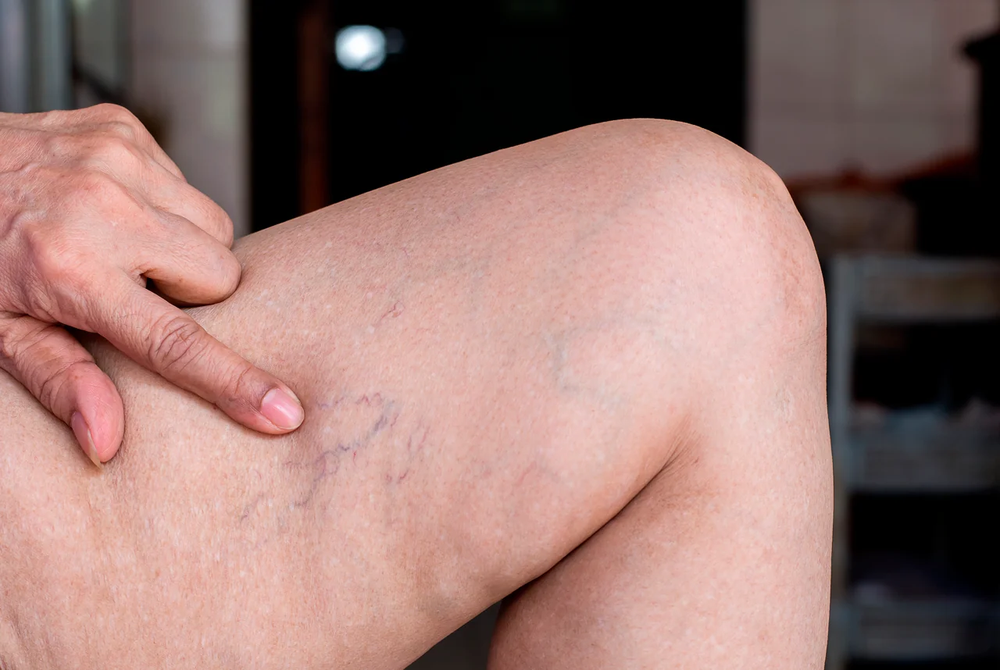
Além do estético, quais problemas as varizes causam?
As varizes não são apenas um problema estético. Saiba quais complicações podem surgir sem tratamento adequado.
Ler artigo →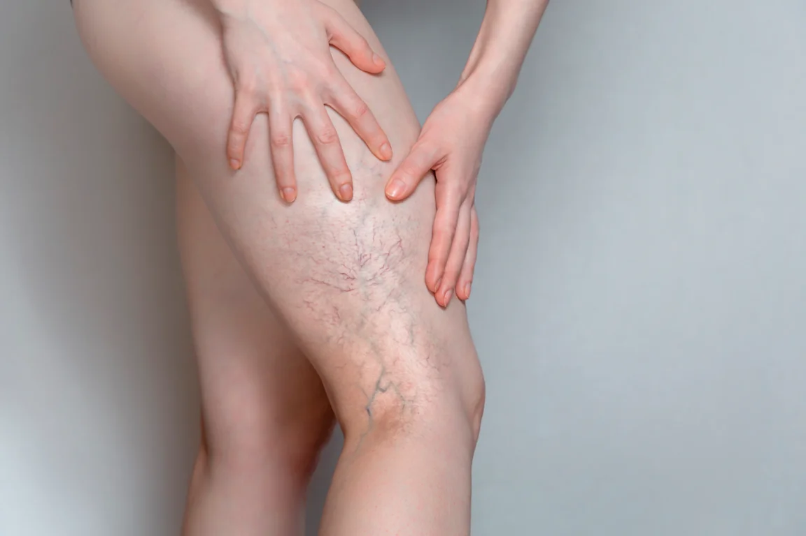
Varizes: fatores de risco que você deve se atentar
Hereditariedade, sedentarismo, gravidez… Conheça os principais fatores que favorecem o desenvolvimento de varizes.
Ler artigo →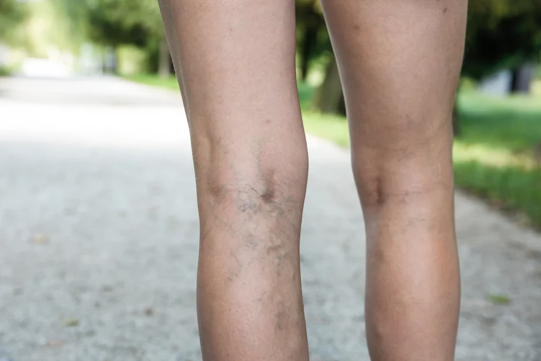
Quais são as opções de tratamentos para varizes?
Independente do seu caso, existem opções de tratamento adequadas. Conheça as principais técnicas disponíveis.
Ler artigo →Quais os sintomas de varizes?
Dor, peso, inchaço e cãibras podem ser sinais de insuficiência venosa. Aprenda a identificar os sintomas das varizes.
Ler artigo →
Existem remédios e cremes para tratar varizes?
Descubra a verdade sobre produtos que prometem eliminar varizes e o que realmente funciona no tratamento.
Ler artigo →5 razões para tratar as varizes no inverno
O frio favorece os tratamentos vasculares por razões clínicas e práticas. Conheça os benefícios de tratar no inverno.
Ler artigo →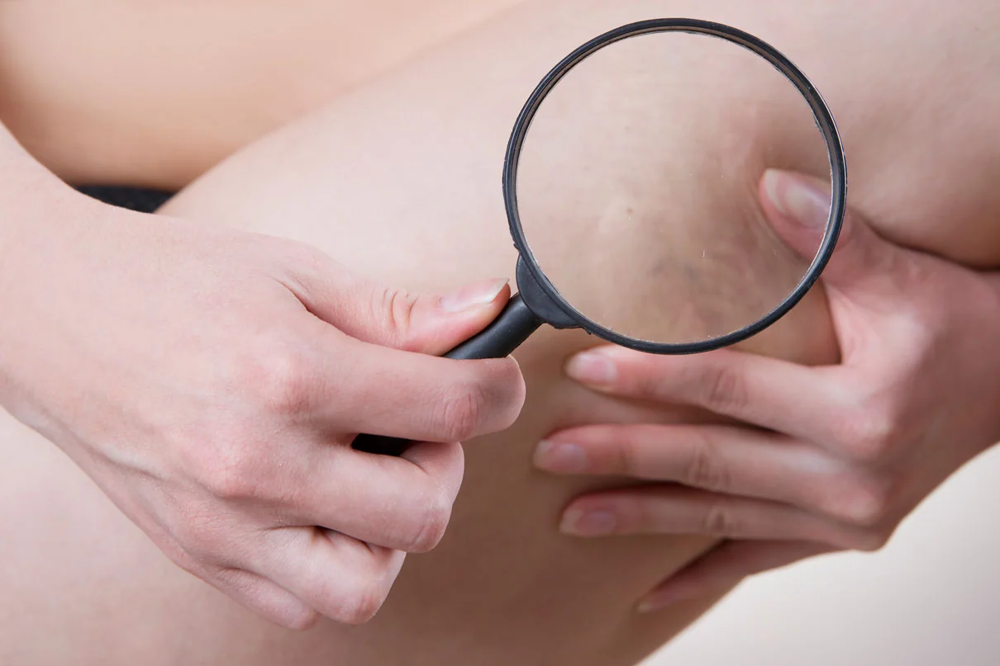
A importância do check-up vascular
O check-up vascular é essencial para prevenir doenças e identificar varizes em estágio inicial, quando o tratamento é mais simples.
Ler artigo →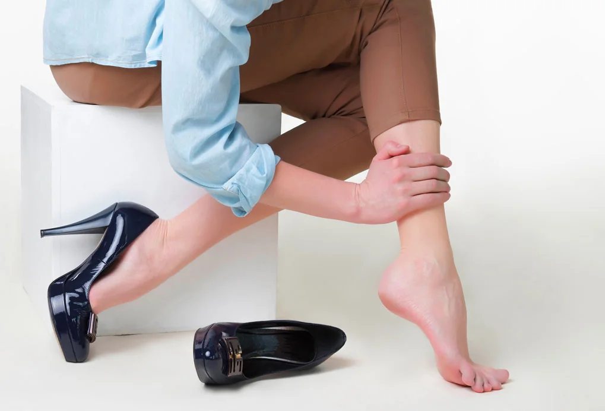
Tratamento de varizes com Laser: como funciona?
O laser é uma das técnicas mais modernas para tratar varizes. Saiba como o procedimento é realizado e seus resultados.
Ler artigo →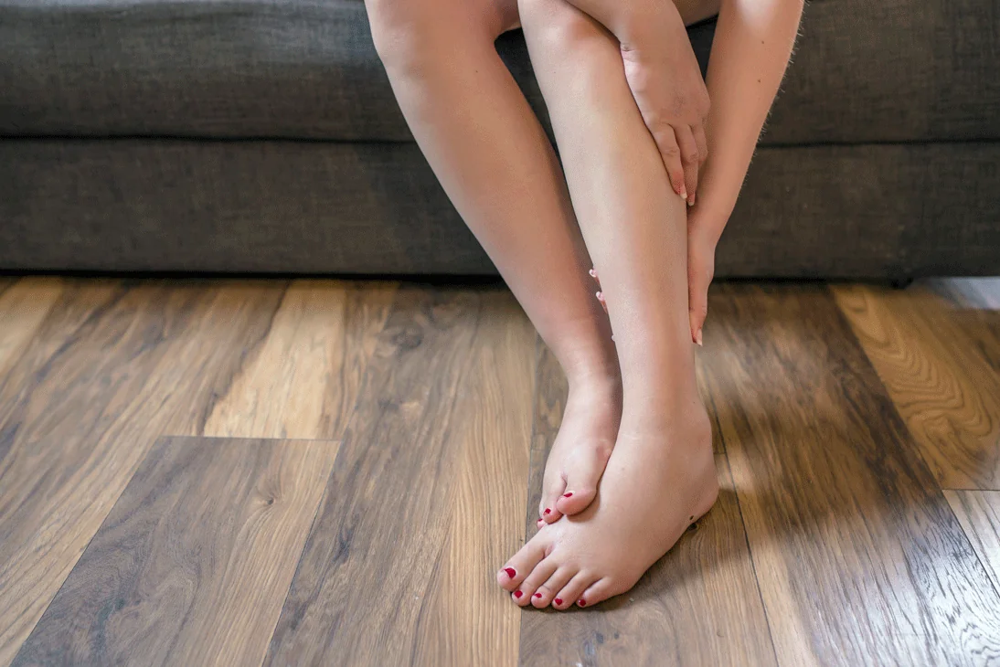
Conheça a Escleroterapia com Espuma
A escleroterapia com espuma é indicada para varizes de médio calibre e pode substituir a cirurgia em muitos casos.
Ler artigo →Tratamento de varizes: conheça o LASER Endovenoso
O LASER Endovenoso é alternativa minimamente invasiva à cirurgia tradicional para varizes de maior calibre.
Ler artigo →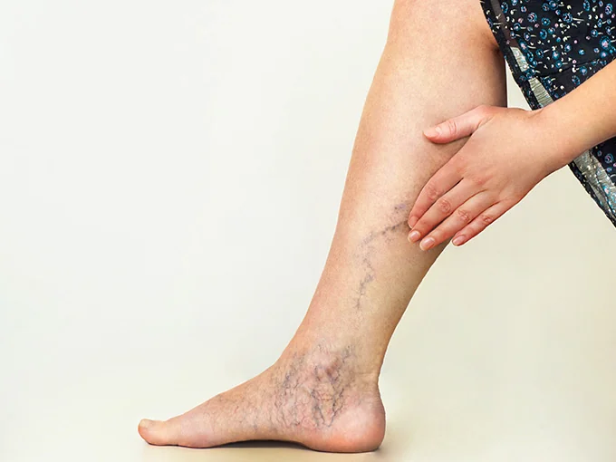
Microcirurgia e cirurgia de varizes
Quando as varizes são extensas, microcirurgia e cirurgia convencional são as opções mais indicadas. Saiba como funcionam.
Ler artigo →Verão: dicas para curtir a estação sem dor de cabeça
O calor intensifica os sintomas das varizes. Veja dicas práticas para aliviar inchaço, dor e cansaço nas pernas no verão.
Ler artigo →Varizes e vasinhos: tratamentos para homens
Um em cada cinco homens tem varizes. Saiba por que o diagnóstico é tardio e quais tratamentos são indicados.
Ler artigo →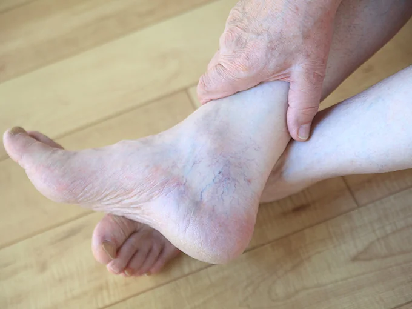
Por que devemos tratar os vasinhos?
Os vasinhos não são apenas estéticos — podem indicar insuficiência venosa. Entenda por que tratar é importante.
Ler artigo →Mitos e verdades sobre as varizes
Salto alto causa varizes? Creme trata varizes? Descubra o que a ciência diz sobre as crenças mais comuns.
Ler artigo →
Qual o melhor tratamento para varizes?
A resposta depende do tipo e calibre das varizes. Conheça todas as opções e entenda como é feita a escolha correta.
Ler artigo →Inverno: a melhor época para tratar varizes
O frio facilita o pós-tratamento e reduz risco de manchas. Saiba por que o inverno é ideal para iniciar os procedimentos.
Ler artigo →O que são os vasinhos no rosto?
As telangiectasias faciais são capilares dilatados na pele do rosto. Conheça causas, riscos e tratamento com laser.
Ler artigo →
Mitos e verdades sobre meias de compressão
Qualquer meia serve? A meia perde efeito ao lavar? Esclareça as dúvidas mais comuns sobre as meias compressivas.
Ler artigo →Varizes na gravidez: é normal ter, mas precisa tratar
A gravidez é um dos maiores fatores de risco para varizes. Saiba como prevenir e quando buscar acompanhamento especializado.
Ler artigo →Por que tratar as varizes?
Varizes não tratadas evoluem para complicações sérias. Entenda por que o tratamento é uma necessidade médica, não estética.
Ler artigo →
Má circulação nos braços e pernas: como melhorar
Extremidades frias, formigamento e inchaço podem ser sinais de má circulação. Saiba o que fazer para melhorar.
Ler artigo →Cirurgia de varizes: quando é indicada
Com tantas alternativas disponíveis, quando a cirurgia ainda é necessária? Entenda as indicações e como é realizada.
Ler artigo →Varizes não têm idade
Jovens também desenvolvem varizes. Saiba por que a genética é mais determinante do que a idade e como se proteger.
Ler artigo →Como as meias de compressão ajudam a prevenir varizes
As meias compressivas são aliadas na prevenção e tratamento. Saiba como funcionam e quando são indicadas.
Ler artigo →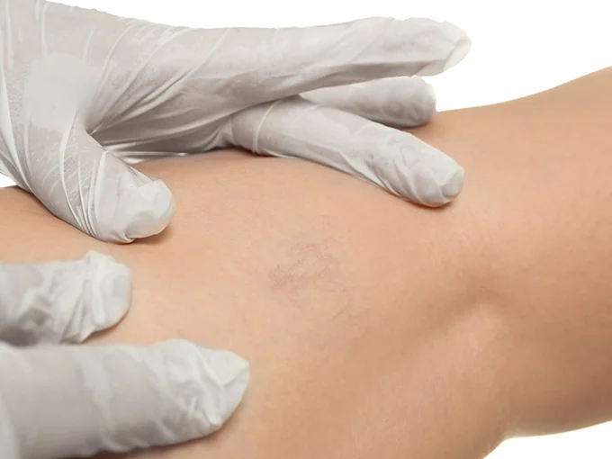
Check-up vascular: você já fez?
As doenças vasculares estão entre as maiores causas de mortalidade. Saiba com que frequência fazer o check-up vascular.
Ler artigo →Vasinhos no rosto têm tratamento
Os vasinhos faciais têm tratamento eficaz com laser. Saiba as causas, como funciona o procedimento e os cuidados necessários.
Ler artigo →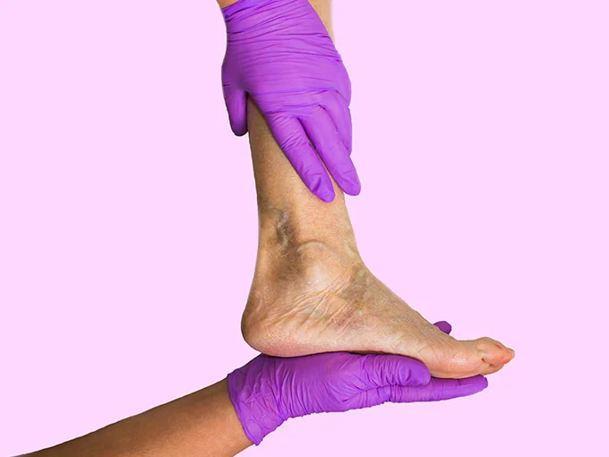
Por que fazer escleroterapia com cirurgião vascular?
A escleroterapia realizada por profissional não qualificado pode causar complicações sérias. Entenda a importância do especialista.
Ler artigo →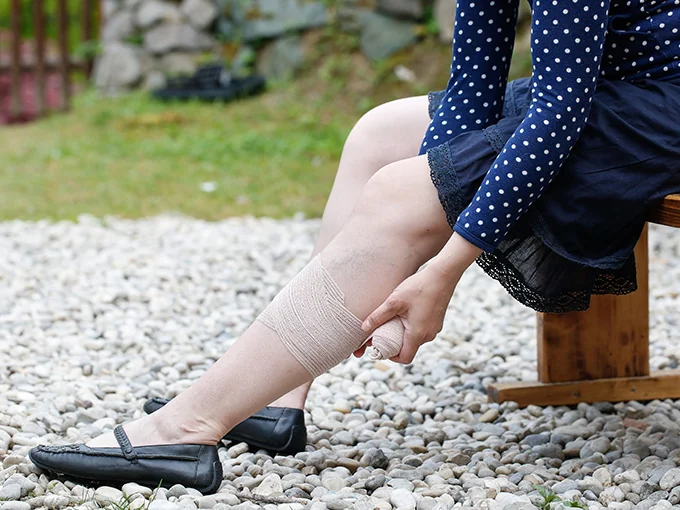
Aproveite o inverno para tratar as varizes
O inverno é o momento ideal para iniciar o tratamento. Saiba por que e conheça todas as opções disponíveis.
Ler artigo →
Salto alto causa varizes?
A ciência responde: salto alto não causa varizes diretamente, mas pode agravar sintomas. Saiba a verdade sobre calçados e circulação.
Ler artigo →Sintomas das varizes
As varizes causam muito mais do que alteração visual. Conheça todos os sintomas da insuficiência venosa e quando buscar ajuda.
Ler artigo →Alimentos que fazem bem para a circulação
A alimentação protege os vasos sanguíneos. Conheça os alimentos que melhoram a circulação e os que prejudicam.
Ler artigo →Como evitar varizes praticando atividades físicas
O exercício regular é um dos melhores aliados da saúde vascular. Saiba quais atividades são mais indicadas para as veias.
Ler artigo →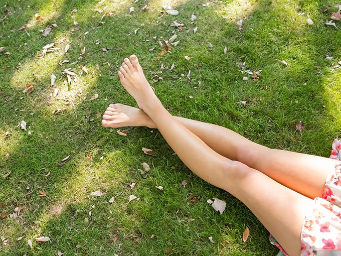
8 dicas para manter a saúde das pernas
Hábitos simples e consistentes podem retardar o surgimento de varizes e manter suas pernas saudáveis por mais tempo.
Ler artigo →Varizes: o que são, suas causas e tratamentos
Guia completo sobre varizes: definição, causas reais (e as que não causam), e todos os tratamentos disponíveis atualmente.
Ler artigo →Pronta para cuidar das suas pernas?
Agende uma avaliação e descubra o melhor tratamento para o seu caso com a Dra. Thielen Szczypkowski.
Agendar consulta